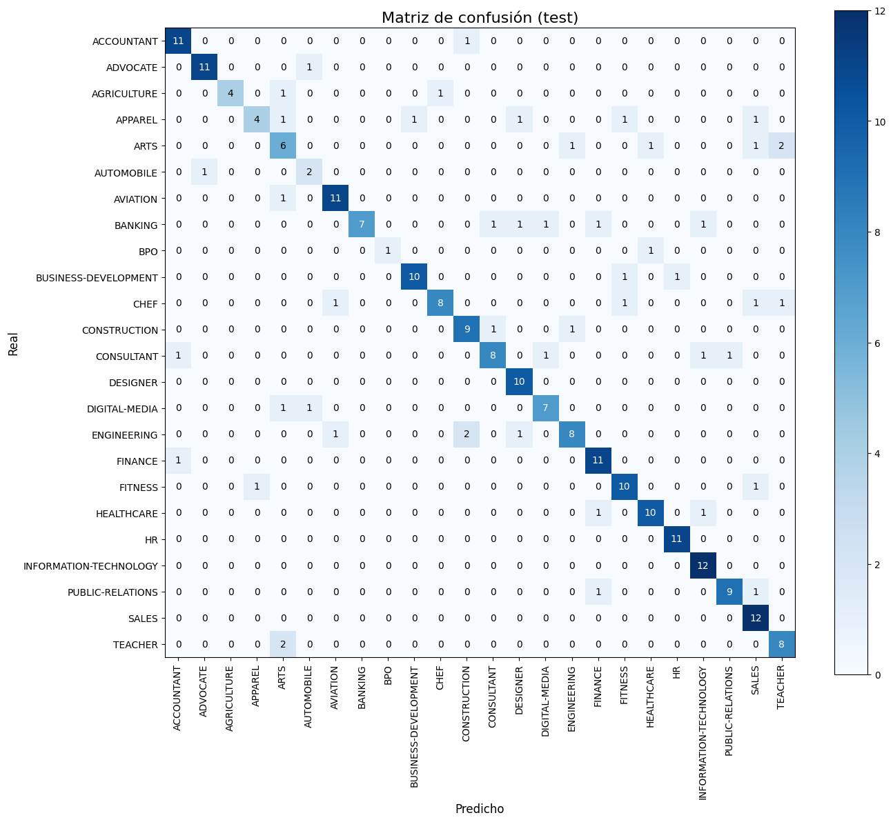

TF-IDF + XGBoost (GPU version)#
import xgboost as xgb, sys
print("xgboost:", xgb.__version__, "| python:", sys.version.split()[0])
xgboost: 2.1.1 | python: 3.10.19
import warnings
warnings.filterwarnings("ignore")
import pandas as pd, numpy as np, random
from sklearn.model_selection import train_test_split
PROJECT_DIR = r"C:\Users\elias\OneDrive\Desktop\MachineLearning\JBOOKS\Project3DL2"
DATA_PATH = rf"{PROJECT_DIR}\jarvis-calling-hiring-contest\Resume\Resume.csv"
TEXT_COL = "Resume_str"
LABEL_COL = "Category"
SEED = 42
random.seed(SEED); np.random.seed(SEED)
try:
train_df, val_df, test_df
except NameError:
df = pd.read_csv(DATA_PATH).dropna(subset=[TEXT_COL, LABEL_COL]).reset_index(drop=True)
train_df, temp_df = train_test_split(df, test_size=0.20, random_state=SEED, stratify=df[LABEL_COL])
val_df, test_df = train_test_split(temp_df, test_size=0.50, random_state=SEED, stratify=temp_df[LABEL_COL])
all_labels = sorted(train_df[LABEL_COL].unique())
label2id = {c:i for i,c in enumerate(all_labels)}
id2label = {i:c for c,i in label2id.items()}
NUM_CLASSES = len(all_labels)
y_train = train_df[LABEL_COL].map(label2id).values
y_val = val_df[LABEL_COL].map(label2id).values
y_test = test_df[LABEL_COL].map(label2id).values
print("train/val/test:", train_df.shape, val_df.shape, test_df.shape, "| NUM_CLASSES:", NUM_CLASSES)
train/val/test: (1987, 4) (248, 4) (249, 4) | NUM_CLASSES: 24
import re, unicodedata
from sklearn.feature_extraction.text import TfidfVectorizer
def clean_text_min(s: str) -> str:
if not isinstance(s, str): return ""
s = unicodedata.normalize("NFKC", s).lower()
s = re.sub(r"<[^>]+>", " ", s)
s = re.sub(r"[^\w\s]", " ", s)
s = re.sub(r"\s+", " ", s).strip()
return s
# Hiperparámetros TF-IDF (ajústalos si quieres)
NGRAMS = (1, 2)
MAX_FEATS = 120_000
MIN_DF = 2
MAX_DF = 0.95
tfidf = TfidfVectorizer(
preprocessor=clean_text_min,
analyzer="word",
ngram_range=NGRAMS,
max_features=MAX_FEATS,
min_df=MIN_DF,
max_df=MAX_DF,
dtype=np.float32
)
X_tr = tfidf.fit_transform(train_df[TEXT_COL].tolist())
X_va = tfidf.transform(val_df[TEXT_COL].tolist())
X_te = tfidf.transform(test_df[TEXT_COL].tolist())
X_tr.shape, X_va.shape, X_te.shape
((1987, 120000), (248, 120000), (249, 120000))
import numpy as np
from collections import Counter
cnt = Counter(y_train)
classes = np.arange(NUM_CLASSES)
class_weights = np.array([1.0 / cnt.get(c, 1) for c in classes], dtype=np.float32)
sample_weight_tr = class_weights[y_train] # vector de pesos por muestra
print("Ejemplo pesos por clase (id -> peso):", dict(zip(classes, class_weights.round(3))))
Ejemplo pesos por clase (id -> peso): {0: 0.011, 1: 0.011, 2: 0.02, 3: 0.013, 4: 0.012, 5: 0.034, 6: 0.011, 7: 0.011, 8: 0.056, 9: 0.01, 10: 0.011, 11: 0.011, 12: 0.011, 13: 0.012, 14: 0.013, 15: 0.011, 16: 0.011, 17: 0.011, 18: 0.011, 19: 0.011, 20: 0.01, 21: 0.011, 22: 0.011, 23: 0.012}
import xgboost as xgb
import numpy as np
# Asegura tipos OK
y_tr_i = y_train.astype(np.int32); y_va_i = y_val.astype(np.int32)
dtrain = xgb.DMatrix(X_tr, label=y_tr_i) # sin sample_weight para aislar
dvalid = xgb.DMatrix(X_va, label=y_va_i)
params = {
"objective": "multi:softprob",
"num_class": int(NUM_CLASSES),
"eval_metric": ["mlogloss","merror"],
# GPU si tu build >=2.0; si falla, comenta "device" y deja tree_method
"device": "cuda",
"tree_method": "gpu_hist",
# Hiperparams "agresivos" para ver movimiento
"learning_rate": 0.2, # sube eta para salir del llano
"max_depth": 6,
"min_child_weight": 1.0,
"subsample": 0.9,
"colsample_bytree": 0.8,
"reg_lambda": 1.0,
"reg_alpha": 0.0,
"random_state": 42,
}
bst = xgb.train(
params,
dtrain,
num_boost_round=2000,
evals=[(dtrain,"train"), (dvalid,"valid")],
early_stopping_rounds=100,
verbose_eval=50
)
print("best_iteration:", getattr(bst, "best_iteration", None))
[0] train-mlogloss:1.98621 train-merror:0.15803 valid-mlogloss:2.13548 valid-merror:0.30645
[50] train-mlogloss:0.01951 train-merror:0.00000 valid-mlogloss:0.83334 valid-merror:0.23387
[100] train-mlogloss:0.01002 train-merror:0.00000 valid-mlogloss:0.85776 valid-merror:0.22984
[150] train-mlogloss:0.00809 train-merror:0.00000 valid-mlogloss:0.87067 valid-merror:0.22177
[200] train-mlogloss:0.00726 train-merror:0.00000 valid-mlogloss:0.88082 valid-merror:0.22984
[249] train-mlogloss:0.00686 train-merror:0.00000 valid-mlogloss:0.88312 valid-merror:0.22984
best_iteration: 150
def predict_proba_booster(booster, X):
dX = xgb.DMatrix(X)
if hasattr(booster, "best_iteration") and booster.best_iteration is not None:
return booster.predict(dX, iteration_range=(0, int(booster.best_iteration)+1))
return booster.predict(dX)
y_prob_te = predict_proba_booster(bst, X_te)
y_pred_te = y_prob_te.argmax(1)
from sklearn.metrics import accuracy_score, precision_recall_fscore_support, classification_report
acc = accuracy_score(y_test, y_pred_te)
prec_m, rec_m, f1_m, _ = precision_recall_fscore_support(y_test, y_pred_te, average="macro", zero_division=0)
print({"accuracy":acc, "precision_macro":prec_m, "recall_macro":rec_m, "f1_macro":f1_m})
print(classification_report(y_test, y_pred_te, target_names=[id2label[i] for i in range(NUM_CLASSES)], digits=4))
{'accuracy': 0.8032128514056225, 'precision_macro': 0.8142526182967359, 'recall_macro': 0.782807239057239, 'f1_macro': 0.7846779362500778}
precision recall f1-score support
ACCOUNTANT 0.8462 0.9167 0.8800 12
ADVOCATE 0.9167 0.9167 0.9167 12
AGRICULTURE 1.0000 0.6667 0.8000 6
APPAREL 0.8000 0.4444 0.5714 9
ARTS 0.5000 0.5455 0.5217 11
AUTOMOBILE 0.5000 0.6667 0.5714 3
AVIATION 0.8462 0.9167 0.8800 12
BANKING 1.0000 0.5833 0.7368 12
BPO 1.0000 0.5000 0.6667 2
BUSINESS-DEVELOPMENT 0.9091 0.8333 0.8696 12
CHEF 0.8889 0.6667 0.7619 12
CONSTRUCTION 0.7500 0.8182 0.7826 11
CONSULTANT 0.8000 0.6667 0.7273 12
DESIGNER 0.7692 1.0000 0.8696 10
DIGITAL-MEDIA 0.7778 0.7778 0.7778 9
ENGINEERING 0.8000 0.6667 0.7273 12
FINANCE 0.7857 0.9167 0.8462 12
FITNESS 0.7692 0.8333 0.8000 12
HEALTHCARE 0.8333 0.8333 0.8333 12
HR 0.9167 1.0000 0.9565 11
INFORMATION-TECHNOLOGY 0.8000 1.0000 0.8889 12
PUBLIC-RELATIONS 0.9000 0.8182 0.8571 11
SALES 0.7059 1.0000 0.8276 12
TEACHER 0.7273 0.8000 0.7619 10
accuracy 0.8032 249
macro avg 0.8143 0.7828 0.7847 249
weighted avg 0.8161 0.8032 0.7990 249
# Matriz de confusión con figura más grande y anotaciones
from sklearn.metrics import confusion_matrix
import matplotlib.pyplot as plt
import numpy as np
cm = confusion_matrix(y_test, y_pred_te)
fig, ax = plt.subplots(figsize=(14, 12)) # ajustar tamaño aquí
im = ax.imshow(cm, interpolation="nearest", cmap=plt.cm.Blues)
cbar = ax.figure.colorbar(im, ax=ax)
ax.set_title("Matriz de confusión (test)", fontsize=16)
ticks = np.arange(len(id2label))
labels = [id2label[i] for i in ticks]
ax.set_xticks(ticks)
ax.set_yticks(ticks)
ax.set_xticklabels(labels, rotation=90, fontsize=10)
ax.set_yticklabels(labels, fontsize=10)
ax.set_xlabel("Predicho", fontsize=12)
ax.set_ylabel("Real", fontsize=12)
# Añadir los números en cada celda
fmt = "d"
thresh = cm.max() / 2.
for i in range(cm.shape[0]):
for j in range(cm.shape[1]):
ax.text(j, i, format(cm[i, j], fmt),
ha="center", va="center",
color="white" if cm[i, j] > thresh else "black", fontsize=10)
plt.tight_layout()
plt.show()

from sklearn.metrics import roc_auc_score
try:
roc_macro_ovr = roc_auc_score(y_test, y_prob_te, multi_class="ovr", average="macro")
print("ROC-AUC macro (OvR) en test:", round(float(roc_macro_ovr), 4))
except Exception as e:
print("ROC-AUC no disponible:", e)
ROC-AUC macro (OvR) en test: 0.9866
import numpy as np
import xgboost as xgb
def _xgb_predict_proba(booster_or_clf, X):
# Soporta xgb.Booster (xgb.train) y XGBClassifier (sklearn API)
if isinstance(booster_or_clf, xgb.Booster):
dX = xgb.DMatrix(X)
if hasattr(booster_or_clf, "best_iteration") and booster_or_clf.best_iteration is not None:
it = int(booster_or_clf.best_iteration) + 1
return booster_or_clf.predict(dX, iteration_range=(0, it))
return booster_or_clf.predict(dX)
else:
# XGBClassifier
return booster_or_clf.predict_proba(X)
def predict_texts_xgb(text_list, tfidf, booster_or_clf, id2label, topk=1):
"""
text_list: lista de strings crudos
tfidf: TfidfVectorizer ya fit-eado (el mismo del training)
booster_or_clf: xgb.Booster (xgb.train) o XGBClassifier (sklearn)
id2label: dict {id:int -> label:str}
topk: devuelve top-k si >1
"""
# Vectoriza con el mismo TF-IDF del entrenamiento (él aplica su preprocessor interno)
X = tfidf.transform([str(t) for t in text_list])
# Probabilidades por clase
prob = _xgb_predict_proba(booster_or_clf, X) # shape: [N, C]
# Top-1
pred_idx = prob.argmax(axis=1)
labels = [id2label[i] for i in pred_idx]
if topk == 1:
return labels, prob
# Top-k
topk_idx = np.argsort(-prob, axis=1)[:, :topk]
topk_labels = [[id2label[i] for i in row] for row in topk_idx]
topk_conf = np.take_along_axis(prob, topk_idx, axis=1)
return labels, prob, topk_labels, topk_conf
# 8. Curva ROC
# Import only the missing utilities
from sklearn.preprocessing import label_binarize
from sklearn.metrics import roc_curve, auc
import matplotlib.pyplot as plt
# We already have y_prob and y_true from previous computations
probs = y_prob_te
labels_bin = label_binarize(y_test, classes=np.arange(NUM_CLASSES))
plt.figure(figsize=(10, 8))
for i in range(NUM_CLASSES):
fpr, tpr, _ = roc_curve(labels_bin[:, i], probs[:, i])
plt.plot(fpr, tpr, label=f'Clase {i} ({id2label.get(i,"")}) (AUC = {auc(fpr, tpr):.2f})')
plt.plot([0, 1], [0, 1], 'k--')
plt.xlabel('FPR')
plt.ylabel('TPR')
plt.title('Curvas ROC por clase')
plt.legend(loc='lower right', bbox_to_anchor=(1.02, 0))
plt.tight_layout()
plt.show()

texts = [
"Experienced data scientist with NLP background.",
"5+ years in clinical healthcare operations and patient records.",
"Designed automotive embedded systems for electric vehicles."
]
# Top-1
labels, prob = predict_texts_xgb(texts, tfidf, bst, id2label, topk=1)
for t, lab, p in zip(texts, labels, prob.max(axis=1)):
print(f"[TOP1] {lab:>20} conf={p:.3f} | {t[:60]}...")
# Top-3
labels1, prob1, top3_labels, top3_conf = predict_texts_xgb(texts, tfidf, bst, id2label, topk=3)
for i, t in enumerate(texts):
triples = ", ".join([f"{l} ({c:.2f})" for l, c in zip(top3_labels[i], top3_conf[i])])
print(f"[TOP3] {triples} | {t[:60]}...")
[TOP1] BUSINESS-DEVELOPMENT conf=0.900 | Experienced data scientist with NLP background....
[TOP1] HEALTHCARE conf=0.958 | 5+ years in clinical healthcare operations and patient recor...
[TOP1] BUSINESS-DEVELOPMENT conf=0.900 | Designed automotive embedded systems for electric vehicles....
[TOP3] BUSINESS-DEVELOPMENT (0.90), AVIATION (0.01), AUTOMOBILE (0.01) | Experienced data scientist with NLP background....
[TOP3] HEALTHCARE (0.96), BUSINESS-DEVELOPMENT (0.04), AVIATION (0.00) | 5+ years in clinical healthcare operations and patient recor...
[TOP3] BUSINESS-DEVELOPMENT (0.90), AVIATION (0.01), AUTOMOBILE (0.01) | Designed automotive embedded systems for electric vehicles....
from sklearn.metrics import classification_report, confusion_matrix
# Using y_test and y_pred_te from previous evaluation
rep = classification_report(y_test, y_pred_te, target_names=[id2label[i] for i in range(NUM_CLASSES)],
output_dict=True, digits=4)
df_rep = pd.DataFrame(rep).transpose().sort_values('f1-score', ascending=True)
display(df_rep.head(10)) # clases más débiles
cm = confusion_matrix(y_test, y_pred_te)
plt.figure(figsize=(6,5)); plt.imshow(cm, interpolation="nearest"); plt.colorbar()
plt.title("Matriz de confusión"); plt.xlabel("Predicho"); plt.ylabel("Real"); plt.tight_layout(); plt.show()
# Top confusiones
pairs = []
for i in range(NUM_CLASSES):
for j in range(NUM_CLASSES):
if i!=j and cm[i,j]>0:
pairs.append((cm[i,j], id2label[i], id2label[j]))
pairs = sorted(pairs, reverse=True)[:10]
pairs
| precision | recall | f1-score | support | |
|---|---|---|---|---|
| ARTS | 0.500000 | 0.545455 | 0.521739 | 11.0 |
| APPAREL | 0.800000 | 0.444444 | 0.571429 | 9.0 |
| AUTOMOBILE | 0.500000 | 0.666667 | 0.571429 | 3.0 |
| BPO | 1.000000 | 0.500000 | 0.666667 | 2.0 |
| CONSULTANT | 0.800000 | 0.666667 | 0.727273 | 12.0 |
| ENGINEERING | 0.800000 | 0.666667 | 0.727273 | 12.0 |
| BANKING | 1.000000 | 0.583333 | 0.736842 | 12.0 |
| TEACHER | 0.727273 | 0.800000 | 0.761905 | 10.0 |
| CHEF | 0.888889 | 0.666667 | 0.761905 | 12.0 |
| DIGITAL-MEDIA | 0.777778 | 0.777778 | 0.777778 | 9.0 |

[(2, 'TEACHER', 'ARTS'),
(2, 'ENGINEERING', 'CONSTRUCTION'),
(2, 'ARTS', 'TEACHER'),
(1, 'PUBLIC-RELATIONS', 'SALES'),
(1, 'PUBLIC-RELATIONS', 'FINANCE'),
(1, 'HEALTHCARE', 'INFORMATION-TECHNOLOGY'),
(1, 'HEALTHCARE', 'FINANCE'),
(1, 'FITNESS', 'SALES'),
(1, 'FITNESS', 'APPAREL'),
(1, 'FINANCE', 'ACCOUNTANT')]